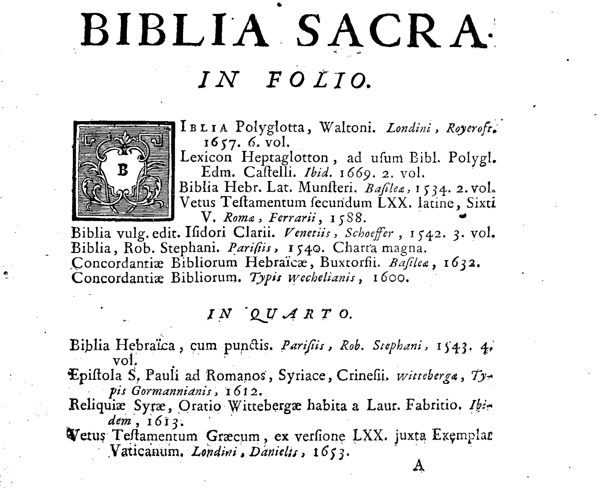

Utiliser un catalogue du XVIIe pour créer une base de données ?
Gallica, la bibliothèque numérique de la Bibliothèque nationale de France, est une merveille d’internet. Des millions de documents numérisés de toutes les époques y sont accessibles, librement et gratuitement. Sur le site, l’article de blog d’Arthur Fagnot concernant le catalogue de la bibliothèque de Charles-Maurice Le Tellier, archevêque de Reims à l’époque de Louis XIV, me donne l’idée d’un défi: utiliser un document identique pour en faire une base de données.
Au-delà de l’intention qui préside à leur constitution et des usages faits de ces catalogues, ils contiennent des données classées, ordonnées, en partie standardisées. Ils sont les modèles des fichiers informatiques actuels.
L’objectif de mon défi est de mettre sous format informatique un catalogue de bibliothèque du XVIIe. Une base de données de ce type peut nous renseigner sur ce qui était lu (ou plutôt possédé) et sur la circulation des ouvrages avec les dates et lieux d’impression. L’histoire du livre à l’époque moderne est un domaine riche et passionnant où se sont illustrés des historiens célèbres (citons Lucien Febvre et Roger Chartier).
Mon exercice se concentre sur la systématisation et l’automatisation de la démarche: quelles données sont accessibles sur Gallica ? Sont-elles facilement transposables vers une base de données informatique ?
Trouver un ouvrage du XVIIe numérisé
Afin de manipuler un peu la fonctionnalité de recherche sur Gallica, je ne reprends pas le catalogue de Charles-Maurice Le Tellier mais je cherche un ouvrage similaire. Je trouve alors le catalogue de la bibliothèque du chanoine de la cathédrale de Reims, Nicolas Bachelier, imprimé en 1725. L’introduction, en latin, de l’ouvrage nous indique que ce catalogue a été imprimé pour la mise en vente de la bibliothèque. Un beau candidat pour l’exercice de transposition.
Gallica offre la possibilité de télécharger l’ouvrage numérisé en format pdf ou JPEG, mais aussi une transcription “océrisée”1 en format texte (.txt).

Le catalogue est découpé en chapitres selon le sujet (“bibles”, “textes des pères de l’église”, etc) et le format (in folio, in quarto, in octavo, etc). Il reprend explicitement le découpage du catalogue de Charles-Maurice Le Tellier. Les références du catalogue comprennent: auteur, titre, année de publication, lieu d’impression et nom de l’imprimeur. Les champs de la base de données se dessinent aisèment.
S’il est envisageable d’informatiser ce catalogue, est-ce faisable? Est-ce possible avec un investissement raisonnable ?
En essayant concrêtement sur un échantillon, on identifie les obstacles et les contraintes à cet exercice.
86% de fiabilité est-ce suffisant ?
Gallica indique que la transcription numérique (ou “océrisation”) est fiable à 86%. Ce taux peut paraître élevé. Mais, lu autrement, il signifie 1,4 erreur pour 10 caractères. En bref, quasiment une erreur tous les 2 mots (la note à la dictée ne serait pas fameuse), il y a donc beaucoup de défauts dans cette transcription.
Le catalogue date de 1725. La typographie est différente de la typographie contemporaine: - utilisation du “s long”: le “ſ” qui ressemble à un “f” sans la barre horizontale. La numérisation est systématiquement fautive sur ce caractère. - des ligatures - des lettrines
Le document est imprimé et ancien. L’encre est irrégulière. Les pages peuvent être tâchées. Un “e” se transforme en “c”, une tâche devient un point et ainsi de suite. Notons que le catalogue a peu d’annotations manuscrites que la numérisation aurait encore plus de mal à interpréter.
La mise en forme n’est pas prise en compte par la transcription. Ainsi la mise en italique disparaît-elle. Or, dans le catalogue, elle souligne les informations du lieu d’impression et du nom de l’imprimeur. Leur identification serait facilitée.
Les entrées du catalogue sont en latin, en français et en espagnol, avec des variations de caractères: une confusion entre le “u” et “v” en latin, des accents et des caractères spécifiques au français et à l’espagnol. Les langues ne font pas l’objet de catégories spécifiques, deux entrées en latin suivies d’une entrée en français.
Ensuite le format des entrées du catalogue varient. Certains champs sont manquants : auteur (qui est l’auteur de la Bible ?) et nom de l’imprimeur. Souvent l’ouvrage est mentionné avec une date mais parfois sans. Le recensement n’est pas systématique. Les champs sont séparés par des points ou des virgules ou des espaces, parfois des sauts à la ligne et des indentations suprennent.
Enfin le rédacteur (ou les rédacteurs ?) utilisent des abréviations, en particulier des “ibidem” ou “identiques” pour des volumes provenant d’un même auteur ou d’une collection. Parfois, remplacées par des tirets cadratins.
Tous ces défauts et ces variations signalent les contraintes à prendre en compte. L’automatisation a besoin de situations répétitives auxquelles des règles s’appliquent. La moindre variation est un cas particulier.
Sachant qu’il faut aussi définir l’objet cible, à quoi doit ressembler la base de données ?
Construire une base de données au risque de perdre le document
Une base de donnée pourrait être un long fichier excel (format .csv) avec les champs auteur, titre, date, lieu de parution, imprimeur, catégorie. Quand il n’y a pas la donnée, le champ est laissé vide ou le courant “N/A” (non applicable). Ce fichier serait un outil pour répondre à ces questions: Combien d’ouvrages? Combien d’ouvrages imprimés dans tel lieu? Quand les ouvrages ont-ils été publiés ? On pourrait créer un annuaire des imprimeurs par lieu et par dates.
L’exercice consisterait à remplir le fichier manuellement ou à utiliser un formulaire de saisie. Cela implique que la liste des champs à remplir soit relativement stable.
1 mois de travail pour numériser le document
Une solution intermédiaire et souple sur la liste des champs consiste à utiliser le format XML. Il a l’avantage de réutiliser le fichier de la transcription océrisé par Gallica.
Exemple pour une entrée du catalogue:
```xml
<titre>
BIBLIA Polyglotta, Waltoni.
</titre>
<lieu>
Londini,
</lieu>
<editeur>
Royercroft,
</editeur>
<date>
1657
</date>
<volume>
6. vol.
</volume>
```
C’est un exercice de lecture et de découpage.
En 1 heure, je transcris manuellement 1 page en XML. Le livre compte plus de 500 pages. A ce rythme, il faudrait environ 1 mois pour transcrire la totalité de l’ouvrage.
Le passage du format XML à un fichier excel serait ensuite assez simple avec un programme qui balayerait le fichier et reporterait les données dans chaque champ.
Quel est le bilan de cet exercice ?
Gallica fournit des documents numérisés selon plusieurs formats, une image et une transcription océrisée, mais pas de données directement exploitables. Un travail fastidieux de préparation et de nettoyage reste nécessaire. Son automatisation paraît encore un domaine à défricher.
-
Optical Character Recognition, reconnaissance optique des caractères, donne le néologisme “océriser” fréquent dans la documentation. ↩